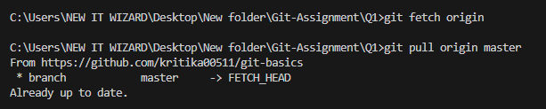

Difference Between git fetch and git pull
git fetch
- Gets latest changes from remote repo
- Does not update your current files
- Used to review changes first
Example:
git fetch origin
git log origin/main
git pull
- Fetches and merges remote changes into your current branch
- Updates your working files
- May cause conflicts
Example:
git pull origin main
Command Output
Below screenshot shows terminal output after running git fetch and git pull.

Summary:
Use fetch to check for changes safely.
Use pull to bring changes into your local code.